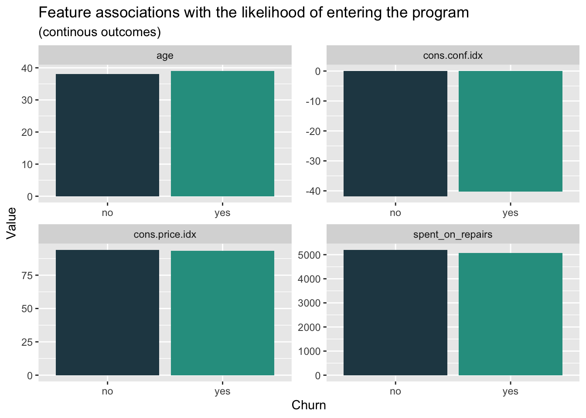
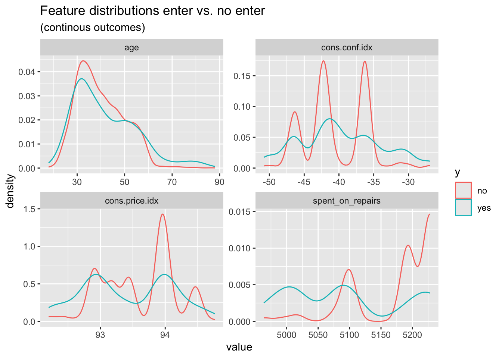
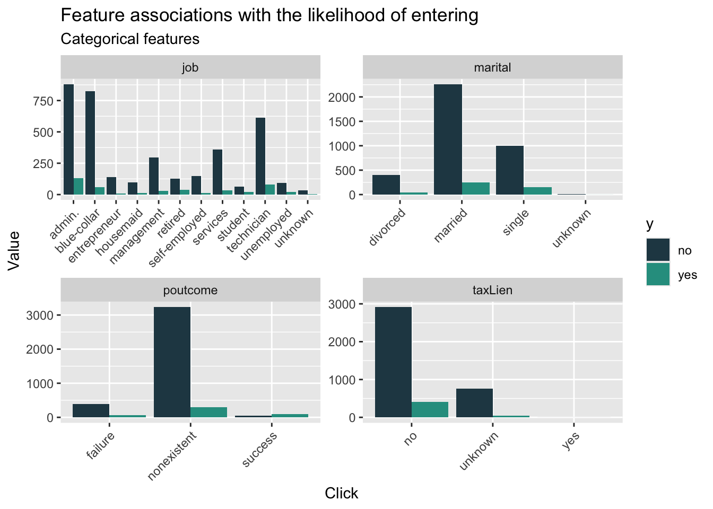
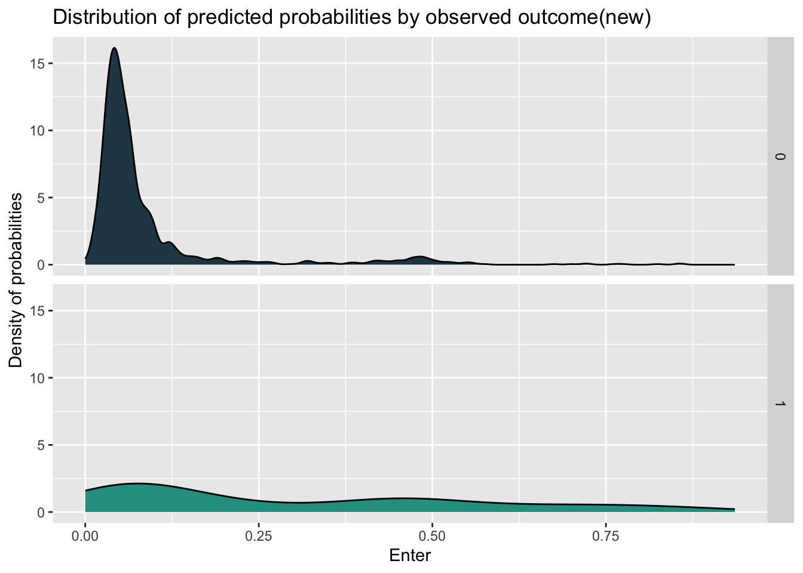
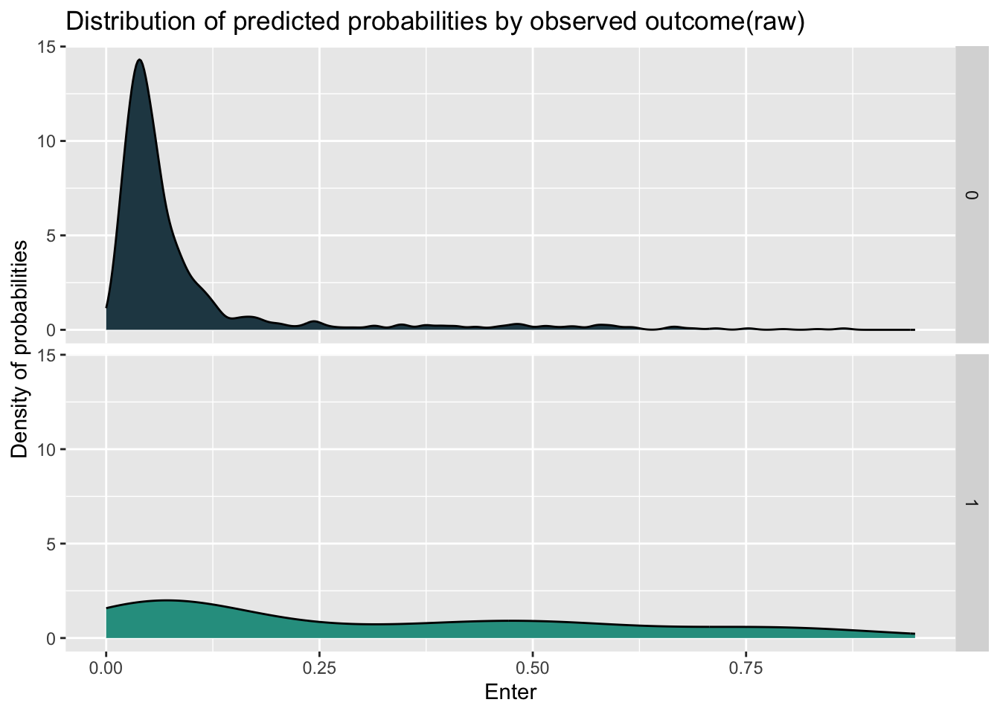
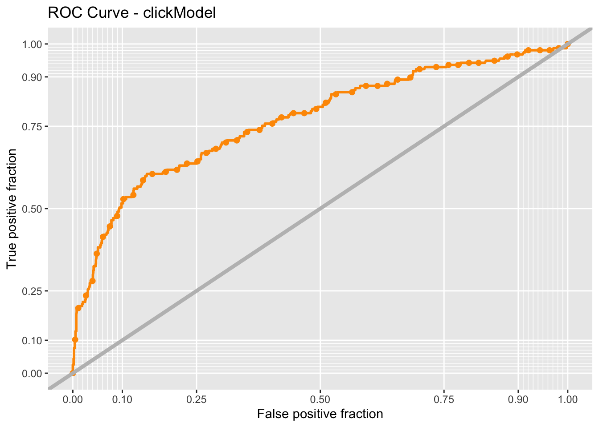
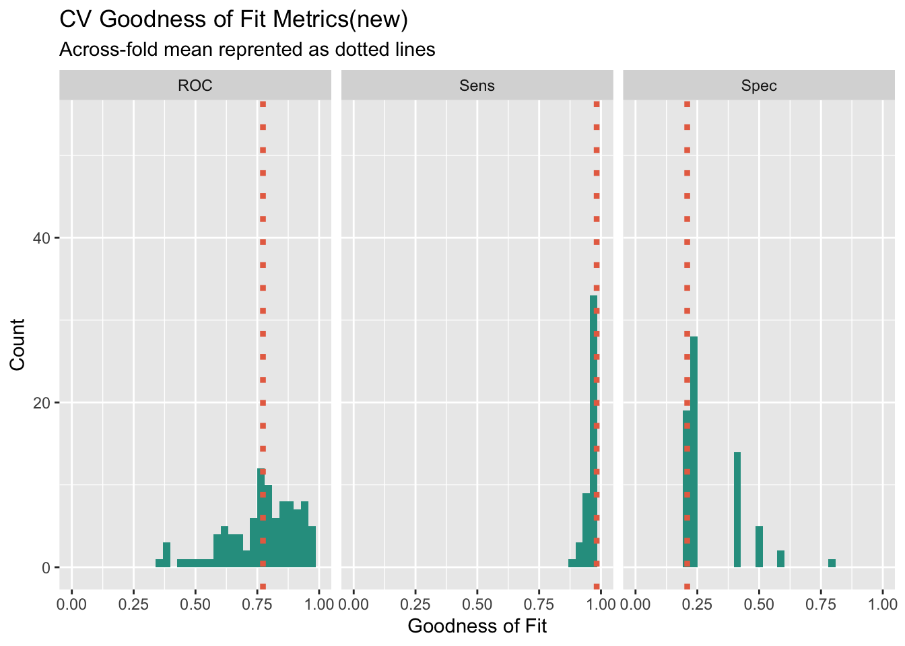
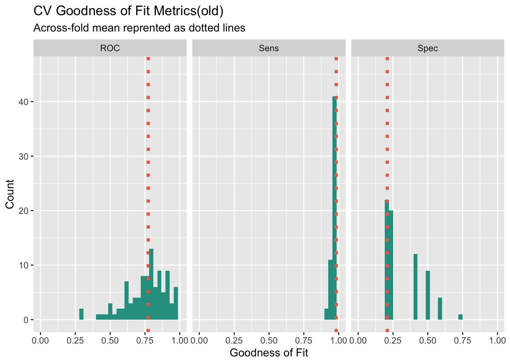
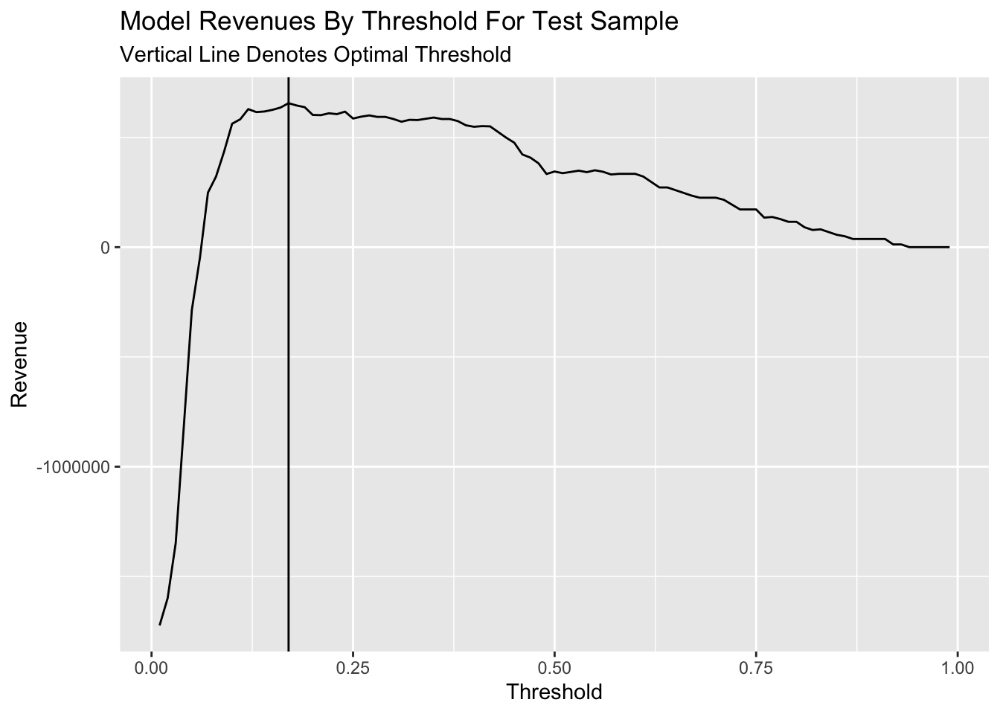
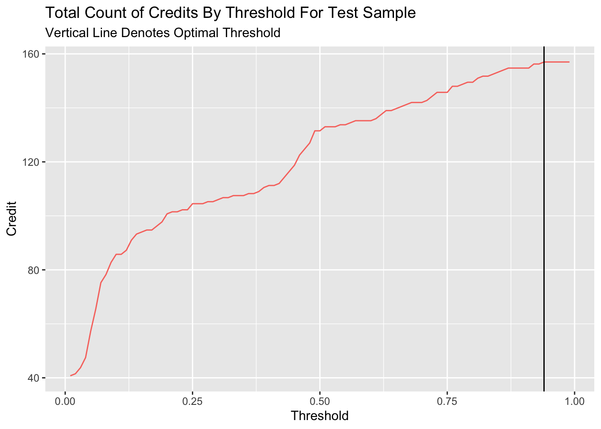

Code
knitr::opts_chunk$set(echo = TRUE)
options(scipen=10000000)
library(tidyverse)
library(kableExtra)
library(caret)
library(knitr)
library(pscl)
library(plotROC)
library(pROC)
library(lubridate)
library(ggcorrplot)
library(vcd)
library(grid)The Department of Housing and Community Development (HCD) in Emil City is launching a home repair tax credit program, and they want to reach out to those who are most likely to take this credit at a low cost. When reaching out randomly, only 11% of the homeowners take this credit and the unsuccessful reach out also wastes a large amount of money.
In order to make the most use of the housing subsidy and create a satisfying benefit, I will build a logistic regression model to predict under given features whether a homeowner will take the credit or not.
knitr::opts_chunk$set(echo = TRUE)
options(scipen=10000000)
library(tidyverse)
library(kableExtra)
library(caret)
library(knitr)
library(pscl)
library(plotROC)
library(pROC)
library(lubridate)
library(ggcorrplot)
library(vcd)
library(grid)palette5 <- c("#264653","#2a9d8f","#e9c46a",'#f4a261',"#e76f51")
palette4 <- c("#264653","#2a9d8f","#e9c46a","#e76f51")
palette2 <- c("#264653","#2a9d8f")
churn <- read.csv('/Users/mr.smile/Desktop/UPENN/FALL23/MUSA508/musa_5080_2023-main/Housing Subsidy/churnBounce.csv')
house_sub <- read.csv('/Users/mr.smile/Desktop/UPENN/FALL23/MUSA508/musa_5080_2023-main/Housing Subsidy/housingSubsidy.csv')Firstly, we want to figure out if there’s significantly feature difference in the groups whether they entered the program, which is useful and effective to determine the potential correlation between different variables and choices. The bar plot showing the median value of the feature, which represent the average situation, doesn’t tell much difference in whether enter the program. Besides, we can find that the group entering the program has a slightly higher median age and lower spend on repairs than the group not entering the program.
house_sub %>%
dplyr::select(y,age, spent_on_repairs, cons.price.idx, cons.conf.idx) %>%
gather(Variable, value, -y) %>%
ggplot(aes(y, value, fill=y)) +
geom_bar(position = "dodge", stat = "summary", fun = "median") +
facet_wrap(~Variable, scales = "free") +
scale_fill_manual(values = palette2) +
labs(x="Churn", y="Value",
title = "Feature associations with the likelihood of entering the program",
subtitle = "(continous outcomes)") +
theme(legend.position = "none")
When it comes to the density plot of the features above, we can find two groups have apparent differences in the distribution. The group entering the program has a relatively lower distribution in the age from 30 to 50 years. As for the spend on repairs, we can clearly find that the group entering the program has an obviously lower distribution in the higher spend interval. When we focus on the economic background of the decision, we can find that the lower confidence index, which represent the relatively low consumption desire, have less influence on the group entering the program. Meanwhile, the higher consumer price index has more association with the rejection to enter the program.
house_sub %>%
dplyr::select(y,age, spent_on_repairs, cons.price.idx, cons.conf.idx) %>%
gather(Variable, value, -y) %>%
ggplot() +
geom_density(aes(value, color=y), fill = "transparent") +
facet_wrap(~Variable, scales = "free") +
scale_fill_manual(values = palette2) +
labs(title = "Feature distributions enter vs. no enter",
subtitle = "(continous outcomes)")
When we look at the count plot for different features related to whether entering the program, we can find that, in general, the group not entering the program has more members than that entering the program. In the job feature, we can find that the gap in some field is more extreme like administor, blue-collar, and technican.
house_sub %>%
dplyr::select(y, marital,job,taxLien,poutcome) %>%
gather(Variable, value, -y) %>%
count(Variable, value, y) %>%
ggplot(., aes(value, n, fill = y)) +
geom_bar(position = "dodge", stat="identity") +
facet_wrap(~Variable, scales="free") +
scale_fill_manual(values = palette2) +
labs(x="Click", y="Value",
title = "Feature associations with the likelihood of entering",
subtitle = "Categorical features") +
theme(axis.text.x = element_text(angle = 45, hjust = 1))
From the initial data visualization, we could hardly figure out the significantly difference between two different groups. Therefore, it’s essential to engineering the feature to improve further model performance. As for the education, jobs and pdays, which both have many categories, I re-categorize these feature into fewer categories. What’s more, I standardize the cpi and cci indicator to improve the interpretablity.
house_sub$cons.price.idx_s <- scale(house_sub$cons.price.idx)
house_sub$cons.conf.idx_s <- scale(house_sub$cons.conf.idx)
house_sub$poutcome_new <- ifelse(house_sub$poutcome == "success", 1, 0)
house_sub <-
house_sub %>%
mutate(education,
education_new = case_when(education == "basic.4y" ~ "medium",
education == "basic.6y" ~ "medium",
education == "basic.9y" ~ "high",
education == "high.school" ~ "high",
education == "professional.course" ~ "high",
education == "university.degree" ~ "very high",
education == "illiterate" ~ "low",
education == "unknown" ~ "low"))%>%
mutate(job,
job_new = case_when(job == "retired" ~ "low income",
job == "unemployed" ~ "low income",
job =="unknown" ~ "low income",
job == "student" ~ "low income",
job == "housemaid" ~ "medium income",
job == "blue-collar" ~ "medium income",
job == "services" ~ "medium income",
job == "technician" ~ "high income",
job == "management" ~ "high income",
job == "admin." ~ "high income",
job == "entrepreneur" ~ "very high income",
job == "self-employed" ~ "medium income")) %>%
mutate(pdays,
pdays_new = case_when(pdays == "0" ~ "0-6",
pdays == "1" ~ "0-6",
pdays == "2" ~ "0-6",
pdays == "3" ~ "0-6",
pdays == "4" ~ "0-6",
pdays == "5" ~ "0-6",
pdays == "6" ~ "0-6",
pdays == "7" ~ "7-15",
pdays == "9" ~ "7-15",
pdays == "10" ~ "7-15",
pdays == "11" ~ "7-15",
pdays == "12" ~ "7-15",
pdays == "13" ~ "7-15",
pdays == "14" ~ "7-15",
pdays == "15" ~ "7-15",
pdays == "17" ~ "16-21",
pdays == "18" ~ "16-21",
pdays == "19" ~ "16-21",
pdays == "21"~ "16-21",
pdays == "16" ~ "16-21",
pdays == "999" ~ "unknown"))After feature engineering, I split the dataset into training and test one with 65/35 for further data modeling. To compare the performance of new feature, I test the performance of both model using the raw features in the dataset and model with variables after feature engineering and selection.
trainIndex <- createDataPartition(house_sub$y, p = .65,
list = FALSE,
times = 1)
houseTrain <- house_sub[ trainIndex,]
houseTest <- house_sub[-trainIndex,]set.seed(3426)
tempModel <- glm(y_numeric ~ .,
data=houseTrain %>%
dplyr::select(-X,- y,-cons.price.idx_s,-cons.conf.idx_s,
-poutcome_new,-education_new,-job_new,-pdays_new),
family="binomial" (link="logit"))
testProbs_raw <- data.frame(Outcome = as.factor(houseTest$y_numeric),
Probs = predict(tempModel, houseTest, type= "response"))
summary(tempModel)
Call:
glm(formula = y_numeric ~ ., family = binomial(link = "logit"),
data = houseTrain %>% dplyr::select(-X, -y, -cons.price.idx_s,
-cons.conf.idx_s, -poutcome_new, -education_new, -job_new,
-pdays_new))
Coefficients:
Estimate Std. Error z value Pr(>|z|)
(Intercept) -193.7565741 127.7984723 -1.516 0.129491
age 0.0142384 0.0086150 1.653 0.098383 .
jobblue-collar -0.3467856 0.2861796 -1.212 0.225598
jobentrepreneur -0.5024294 0.4766389 -1.054 0.291833
jobhousemaid 0.0665795 0.4920445 0.135 0.892365
jobmanagement -0.7155597 0.3195953 -2.239 0.025159 *
jobretired -0.2185553 0.3899311 -0.560 0.575140
jobself-employed -0.5748698 0.4292805 -1.339 0.180523
jobservices -0.1561030 0.3018183 -0.517 0.605011
jobstudent -0.2972152 0.4586449 -0.648 0.516966
jobtechnician -0.0035192 0.2416566 -0.015 0.988381
jobunemployed 0.0113993 0.4777049 0.024 0.980962
jobunknown -0.5130227 0.9233155 -0.556 0.578463
maritalmarried 0.2925676 0.2692011 1.087 0.277125
maritalsingle 0.3443418 0.3029167 1.137 0.255641
maritalunknown -13.5484129 471.5800915 -0.029 0.977080
educationbasic.6y 0.6243513 0.4421978 1.412 0.157971
educationbasic.9y 0.5959060 0.3789407 1.573 0.115821
educationhigh.school 0.3131519 0.3624309 0.864 0.387570
educationilliterate -13.9561322 1455.3976605 -0.010 0.992349
educationprofessional.course 0.7154565 0.3860064 1.853 0.063813 .
educationuniversity.degree 0.5123543 0.3606339 1.421 0.155403
educationunknown 0.4708085 0.4488698 1.049 0.294235
taxLienunknown -0.2659035 0.2390765 -1.112 0.266048
taxLienyes -12.1771728 1455.3976575 -0.008 0.993324
mortgageunknown -0.0855127 0.5266982 -0.162 0.871025
mortgageyes -0.1756021 0.1491228 -1.178 0.238969
taxbill_in_phlyes -0.1300561 0.1944329 -0.669 0.503559
contacttelephone -1.2536614 0.2968190 -4.224 0.000024 ***
monthaug -0.2163491 0.4481657 -0.483 0.629278
monthdec 0.0859451 0.7057282 0.122 0.903072
monthjul -0.3073090 0.3860889 -0.796 0.426059
monthjun 0.1079818 0.4605025 0.234 0.814607
monthmar 1.9766138 0.5845507 3.381 0.000721 ***
monthmay -0.3445120 0.3152756 -1.093 0.274511
monthnov -0.4261588 0.4417362 -0.965 0.334677
monthoct 0.0663095 0.5653704 0.117 0.906634
monthsep -0.0829597 0.6405100 -0.130 0.896945
day_of_weekmon -0.2995344 0.2303156 -1.301 0.193416
day_of_weekthu -0.1912149 0.2302379 -0.831 0.406250
day_of_weektue -0.0281146 0.2313850 -0.122 0.903290
day_of_weekwed 0.1470685 0.2313566 0.636 0.524986
campaign -0.0416736 0.0399321 -1.044 0.296665
pdays -0.0005937 0.0008399 -0.707 0.479624
previous 0.1455766 0.2025662 0.719 0.472349
poutcomenonexistent 0.8170531 0.3436879 2.377 0.017439 *
poutcomesuccess 0.9577807 0.8320618 1.151 0.249694
unemploy_rate -0.9715137 0.4823099 -2.014 0.043979 *
cons.price.idx 1.8120114 0.8407990 2.155 0.031153 *
cons.conf.idx 0.0716044 0.0291579 2.456 0.014059 *
inflation_rate -0.1175052 0.4595617 -0.256 0.798190
spent_on_repairs 0.0048006 0.0104447 0.460 0.645785
---
Signif. codes: 0 '***' 0.001 '**' 0.01 '*' 0.05 '.' 0.1 ' ' 1
(Dispersion parameter for binomial family taken to be 1)
Null deviance: 1853.7 on 2678 degrees of freedom
Residual deviance: 1391.3 on 2627 degrees of freedom
AIC: 1495.3
Number of Fisher Scoring iterations: 14set.seed(3426)
newModel <- glm(y_numeric ~ .,
data=houseTrain %>%
dplyr::select(-X,-y,-poutcome,-education,-job,-pdays,
-age,-day_of_week,-mortgage,
-taxbill_in_phl,-taxLien,-cons.price.idx,-cons.conf.idx
),
family="binomial" (link="logit"))
testProbs <- data.frame(Outcome = as.factor(houseTest$y_numeric),
Probs = predict(newModel, houseTest, type= "response"))
summary(newModel)
Call:
glm(formula = y_numeric ~ ., family = binomial(link = "logit"),
data = houseTrain %>% dplyr::select(-X, -y, -poutcome, -education,
-job, -pdays, -age, -day_of_week, -mortgage, -taxbill_in_phl,
-taxLien, -cons.price.idx, -cons.conf.idx))
Coefficients:
Estimate Std. Error z value Pr(>|z|)
(Intercept) -10.67857738 51.47345814 -0.207 0.835652
maritalmarried 0.20317012 0.26074138 0.779 0.435861
maritalsingle 0.16384054 0.27576121 0.594 0.552419
maritalunknown -13.36499701 489.46686959 -0.027 0.978216
contacttelephone -1.18402612 0.29322289 -4.038 0.0000539 ***
monthaug -0.11214386 0.43900564 -0.255 0.798376
monthdec -0.01079686 0.68405837 -0.016 0.987407
monthjul -0.16884392 0.38091645 -0.443 0.657580
monthjun 0.23586597 0.44898467 0.525 0.599352
monthmar 1.98919097 0.57015394 3.489 0.000485 ***
monthmay -0.29875119 0.31041524 -0.962 0.335836
monthnov -0.41254124 0.43469535 -0.949 0.342603
monthoct 0.08919060 0.56004384 0.159 0.873467
monthsep -0.10168068 0.63457639 -0.160 0.872697
campaign -0.04376002 0.03947379 -1.109 0.267610
previous -0.23618124 0.12772635 -1.849 0.064441 .
unemploy_rate -0.94197901 0.47550590 -1.981 0.047591 *
inflation_rate 0.00838913 0.44677763 0.019 0.985019
spent_on_repairs 0.00187749 0.01018300 0.184 0.853720
cons.price.idx_s 0.99845258 0.47561524 2.099 0.035792 *
cons.conf.idx_s 0.29797649 0.13027638 2.287 0.022180 *
poutcome_new 0.66448756 0.84248458 0.789 0.430274
education_newlow 0.00004037 0.33224923 0.000 0.999903
education_newmedium -0.19618783 0.24309957 -0.807 0.419651
education_newvery high -0.04539249 0.17050390 -0.266 0.790066
job_newlow income -0.16724034 0.24201361 -0.691 0.489542
job_newmedium income -0.24734626 0.18146896 -1.363 0.172875
job_newvery high income -0.40101631 0.46048223 -0.871 0.383830
pdays_new16-21 -2.23883739 1.29870242 -1.724 0.084725 .
pdays_new7-15 -0.15475105 0.62871179 -0.246 0.805574
pdays_newunknown -0.86195394 0.89420360 -0.964 0.335079
---
Signif. codes: 0 '***' 0.001 '**' 0.01 '*' 0.05 '.' 0.1 ' ' 1
(Dispersion parameter for binomial family taken to be 1)
Null deviance: 1853.7 on 2678 degrees of freedom
Residual deviance: 1416.4 on 2648 degrees of freedom
AIC: 1478.4
Number of Fisher Scoring iterations: 14When we look at the density plot of the predicted probabilities by observed outcome by different models, we can find that the distribution of these two model has little difference, while the model with new feature have more concentration and higher density in the prediction for not entering the program.
ggplot(testProbs, aes(x = Probs, fill = as.factor(Outcome))) +
geom_density() +
facet_grid(Outcome ~ .) +
scale_fill_manual(values = palette2) +
labs(x = "Enter", y = "Density of probabilities",
title = "Distribution of predicted probabilities by observed outcome(new)") +
theme(strip.text.x = element_text(size = 18),
legend.position = "none")
ggplot(testProbs_raw, aes(x = Probs, fill = as.factor(Outcome))) +
geom_density() +
facet_grid(Outcome ~ .) +
scale_fill_manual(values = palette2) +
labs(x = "Enter", y = "Density of probabilities",
title = "Distribution of predicted probabilities by observed outcome(raw)") +
theme(strip.text.x = element_text(size = 18),
legend.position = "none")
Based on the density, I set the probability’s threshold of 0.14 for determine whether the objective will enter the program. From the aspect of sensitivity, which represent the ability to correctly identify positive instances, the new model has better performance than the model with raw feature.
testProbs <-
testProbs %>%
mutate(predOutcome = as.factor(ifelse(testProbs$Probs > 0.5 , 1, 0)))
caret::confusionMatrix(testProbs$predOutcome, testProbs$Outcome,
positive = "1")Confusion Matrix and Statistics
Reference
Prediction 0 1
0 1256 123
1 27 34
Accuracy : 0.8958
95% CI : (0.8789, 0.9111)
No Information Rate : 0.891
P-Value [Acc > NIR] : 0.294
Kappa : 0.2672
Mcnemar's Test P-Value : 0.000000000000008716
Sensitivity : 0.21656
Specificity : 0.97896
Pos Pred Value : 0.55738
Neg Pred Value : 0.91080
Prevalence : 0.10903
Detection Rate : 0.02361
Detection Prevalence : 0.04236
Balanced Accuracy : 0.59776
'Positive' Class : 1
testProbs_raw <-
testProbs_raw %>%
mutate(predOutcome = as.factor(ifelse(testProbs_raw$Probs > 0.5 , 1, 0)))
caret::confusionMatrix(testProbs_raw$predOutcome, testProbs_raw$Outcome,
positive = "1")Confusion Matrix and Statistics
Reference
Prediction 0 1
0 1239 113
1 44 44
Accuracy : 0.891
95% CI : (0.8737, 0.9066)
No Information Rate : 0.891
P-Value [Acc > NIR] : 0.5212
Kappa : 0.3047
Mcnemar's Test P-Value : 0.00000005731
Sensitivity : 0.28025
Specificity : 0.96571
Pos Pred Value : 0.50000
Neg Pred Value : 0.91642
Prevalence : 0.10903
Detection Rate : 0.03056
Detection Prevalence : 0.06111
Balanced Accuracy : 0.62298
'Positive' Class : 1
To see the performance of two models more directly, I check the ROC(Receiver Operating Characteristic) curve, which visualize the performance of binary classification model. The curve that is “above” the y=x line shows the good performance of model. What’s more, I use the AUC (area under curve) score to measure the behavior, with higher score represent better ability to distinguish between the features. And the model with new feature having higher AUC score indicates the better interpretability for whether entering the program.
ggplot(testProbs, aes(d = as.numeric(Outcome), m = Probs)) +
geom_roc(n.cuts = 50, labels = FALSE, colour = "#FE9900") +
style_roc(theme = theme_grey) +
geom_abline(slope = 1, intercept = 0, size = 1.5, color = 'grey') +
labs(title = "ROC Curve - clickModel")
auc(testProbs$Outcome, testProbs$Probs)Area under the curve: 0.7687auc(testProbs_raw$Outcome, testProbs_raw$Probs)Area under the curve: 0.7517To assess the performance and generalization ability of two models and identify the issue of over-fitting due to randomness of train and test data splitting, I use cross validation to compare and select the final model. Comparing the results of two models, we can find that the the new model in general has better performance due to higher ROC score and sensitivity.
ctrl <- trainControl(method = "cv", number = 100, classProbs=TRUE, summaryFunction=twoClassSummary)
cvFit <- train(y ~ .,
data=house_sub %>%
dplyr::select(-X,-y_numeric,-poutcome,-education,-job,-pdays,
-age,-day_of_week,-mortgage,
-taxbill_in_phl,-taxLien,-cons.price.idx,-cons.conf.idx),
method="glm", family="binomial",
metric="ROC", trControl = ctrl)
cvFitGeneralized Linear Model
4119 samples
14 predictor
2 classes: 'no', 'yes'
No pre-processing
Resampling: Cross-Validated (100 fold)
Summary of sample sizes: 4078, 4078, 4077, 4077, 4079, 4079, ...
Resampling results:
ROC Sens Spec
0.7729003 0.9825676 0.209cvFit_raw <- train(y ~ .,
data=house_sub %>%
dplyr::select(-X,- y_numeric,-cons.price.idx_s,-cons.conf.idx_s,
-poutcome_new,-education_new,-job_new,-pdays_new),
method="glm", family="binomial",
metric="ROC", trControl = ctrl)
cvFit_rawGeneralized Linear Model
4119 samples
19 predictor
2 classes: 'no', 'yes'
No pre-processing
Resampling: Cross-Validated (100 fold)
Summary of sample sizes: 4078, 4078, 4077, 4078, 4077, 4078, ...
Resampling results:
ROC Sens Spec
0.762658 0.9811562 0.2185To check the goodness of fitting metrics more clearly, I visualize the result of 100 times cross validation to see the generalization and stability of the model when confronting different data. From the histogram of ROC score, we can find that the new model has distribution more like normal distribution compared the the raw model, and the situation shows that the new model is relatively more stable across different subsets of the data. What’s more, when we focus on the distribution of sensitivity, the new model has more density on the higher sensitivity score, which shows that the new model has better ability to correctly identify positive instances.
dplyr::select(cvFit$resample, -Resample) %>%
gather(metric, value) %>%
left_join(gather(cvFit$results[2:4], metric, mean)) %>%
ggplot(aes(value)) +
geom_histogram(bins=35, fill = "#2a9d8f") +
facet_wrap(~metric) +
geom_vline(aes(xintercept = mean), colour = "#e76f51", linetype = 3, size = 1.5) +
scale_x_continuous(limits = c(0, 1)) +
labs(x="Goodness of Fit", y="Count", title="CV Goodness of Fit Metrics(new)",
subtitle = "Across-fold mean reprented as dotted lines")
dplyr::select(cvFit_raw$resample, -Resample) %>%
gather(metric, value) %>%
left_join(gather(cvFit$results[2:4], metric, mean)) %>%
ggplot(aes(value)) +
geom_histogram(bins=35, fill = "#2a9d8f") +
facet_wrap(~metric) +
geom_vline(aes(xintercept = mean), colour = "#e76f51", linetype = 3, size = 1.5) +
scale_x_continuous(limits = c(0, 1)) +
labs(x="Goodness of Fit", y="Count", title="CV Goodness of Fit Metrics(old)",
subtitle = "Across-fold mean reprented as dotted lines")
To use the model to help calculate the benefits under the prediction of model, we need to set the benefits of different combinations of predicted and actual situation first. Our approach will be to use the confusion matrix from testProbs. Below the cost/benefit for each outcome in our confusion matrix is calculated, like so:
True Negative: $0 True Positive: (-$2850 - $5000 + $10000 + $56000)*0.25*Count - $2850*0.75Count False Negative: -$2850Count False Positive: $0
From the result of cost/benefit table, we can find that the main benefit comes from True-positive situation, which represent we correctly predict that the homeowner will enter the program. And the main cost comes from False-positive, where we would put into money for marketing source and the homeowners will not enter.
cost_benefit_table <-
testProbs %>%
count(predOutcome, Outcome) %>%
summarize(True_Negative = sum(n[predOutcome==0 & Outcome==0]),
True_Positive = sum(n[predOutcome==1 & Outcome==1]),
False_Negative = sum(n[predOutcome==0 & Outcome==1]),
False_Positive = sum(n[predOutcome==1 & Outcome==0])) %>%
gather(Variable, Count) %>%
mutate(Revenue =
ifelse(Variable == "True_Negative",0,
ifelse(Variable == "True_Positive",((-2850-5000+10000+56000)*(Count*0.25)+(-2850*Count*0.75)),
ifelse(Variable == "False_Negative", 0,
ifelse(Variable == "False_Positive", -2850 * Count, 0))))) %>%
bind_cols(data.frame(Description = c(
"We correctly predicted no enter",
"We correctly predicted enter",
"We predicted no enter and homeowner want to enter",
"We predicted homeowner will enter and homeowner did not enter")))
kable(cost_benefit_table,
caption = "Cost/Benefit Table") %>% kable_styling()| Variable | Count | Revenue | Description |
|---|---|---|---|
| True_Negative | 1256 | 0 | We correctly predicted no enter |
| True_Positive | 34 | 421600 | We correctly predicted enter |
| False_Negative | 123 | 0 | We predicted no enter and homeowner want to enter |
| False_Positive | 27 | -76950 | We predicted homeowner will enter and homeowner did not enter |
iterateThresholds <- function(data) {
x = .01
all_prediction <- data.frame()
while (x <= 1) {
this_prediction <-
testProbs %>%
mutate(predOutcome = ifelse(Probs > x, 1, 0)) %>%
count(predOutcome, Outcome) %>%
summarize(True_Negative = sum(n[predOutcome==0 & Outcome==0]),
True_Positive = sum(n[predOutcome==1 & Outcome==1]),
False_Negative = sum(n[predOutcome==0 & Outcome==1]),
False_Positive = sum(n[predOutcome==1 & Outcome==0])) %>%
gather(Variable, Count) %>%
mutate(Revenue =
ifelse(Variable == "True_Negative", 0,
ifelse(Variable == "True_Positive",((-2850-5000+10000+56000)*(Count*0.25)+(-2850*Count*0.75)),
ifelse(Variable == "False_Negative", 0,
ifelse(Variable == "False_Positive", -2850 * Count, 0)))),
Threshold = x)
all_prediction <- rbind(all_prediction, this_prediction)
x <- x + .01
}
return(all_prediction)
}Based on the cost/benefit analysis, we want to increase the true-positive rate and decrease the False-Positive rate to increase the total benefit for the model.Therefore, we need to find the different threshold’s influence on this two indicators. We can find that with the increase of threshold, the True-positive and False Positive will both decrease.
whichThreshold <- iterateThresholds(test_Probs1)
whichThreshold %>%
ggplot(.,aes(Threshold, Count, colour = Variable)) +
geom_point() +
scale_colour_manual(values = palette4) +
labs(title = "Confusion Metric Outcome by Threshold",
y = "Count") +
guides(colour=guide_legend(title = "Legend")) 
However, it’s hard to get the maximium of benefits easily. So we plot the line of benefits with the increasing threshold. We can find the benefit will reach the max when the threshold is set as 0.14 properly.
whichThreshold <- iterateThresholds(testProbs2)
whichThreshold_revenue <-
whichThreshold %>%
group_by(Threshold) %>%
summarize(Revenue = sum(Revenue))
ggplot(whichThreshold_revenue)+
geom_line(aes(x = Threshold, y = Revenue))+
geom_vline(xintercept = pull(arrange(whichThreshold_revenue, -Revenue)[1,1]))+
labs(title = "Model Revenues By Threshold For Test Sample",
subtitle = "Vertical Line Denotes Optimal Threshold")
However, if we use the counts of credits, which represents the number of homeowners can get the credit to enter the program, to measure the performance of different threshold, we can find that the count of credit will continously increase with the increase of threshold until the threshold comes to 0.8.
whichThreshold_credit <-
whichThreshold %>%
mutate(credit = ifelse(Variable == "True_Positive", (Count * 0.25),
ifelse(Variable == "False_Negative", Count, 0))) %>%
group_by(Threshold) %>%
summarize(Credit = sum(credit))
ggplot(whichThreshold_credit)+
geom_line(aes(x = Threshold, y = Credit, colour = "#FE9900"))+
geom_vline(xintercept = pull(arrange(whichThreshold_credit, -Credit)[1,1]))+
labs(title = "Total Count of Credits By Threshold For Test Sample",
subtitle = "Vertical Line Denotes Optimal Threshold")+
theme(legend.position = "None")
if we compare the revenue and credit number of the optimal benefits’ threshold and 0.5 threshold, we can find that despite the benefit will reach max with 0.22 threshold for the model, the model with serve less credit compared to 0.5 threshold.
threshold_table <- merge(whichThreshold_revenue, whichThreshold_credit, by = "Threshold")
final_table <- threshold_table %>%
slice(22, 50)
kable(final_table, caption = "Total Revenue and Total Count of Credits for Optimal Threshold and 0.5 Threshold") %>%
kable_styling()| Threshold | Revenue | Credit |
|---|---|---|
| 0.22 | 609800 | 101.5 |
| 0.50 | 344650 | 131.5 |
In general, I would not recommend this model be put into production. For one thing, the model could have potential bias due to the feature used in the model. The reclassification and consideration of martial, job, and education would lead to potential bias to the vulnerable group in the model production. What’s more, the model show the weakness in the reliability due to model’s low likelihood. This situation may come from limited features in the dataset. If the model could consider more comprehensive factors that influence the credit of homeowner, the model could have better likelihood performance.
Therefore, to improve the performance of model, we can add more variables in the model to increase the comprehensive consideration. For another, we could also think about the features which could lead to bias more consciously. To ensure that the marketing materials resulted in a better response rate, we could based on the actual situation to switch the threshold of model promptly based on the period feedback from the market.